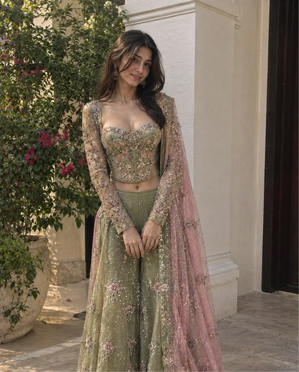
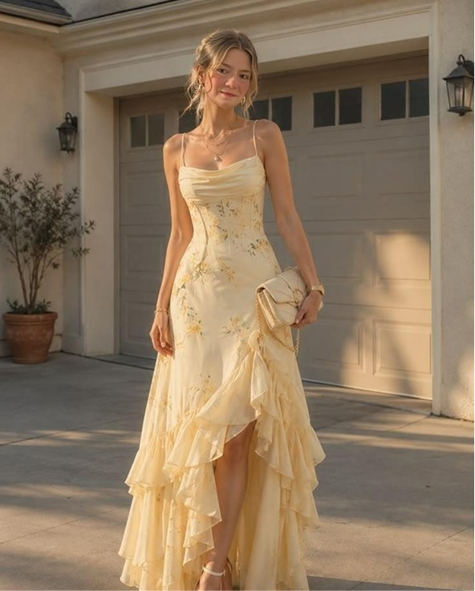
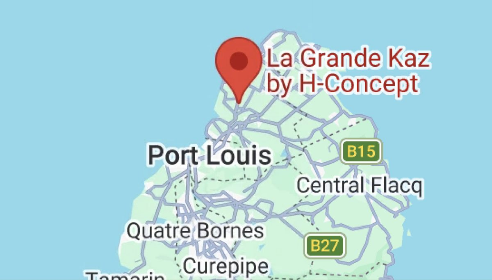

4pm
Tilak
A traditional blessing that formally brings the two families together and marks the start of the celebrations. Tea, coffee, soft drinks, and light starters to follow.
La Grande Kaz
Many of you will be experiencing an Indian wedding for the first time, and each event has its own spirit. Come curious, come ready to celebrate, and don’t worry about knowing exactly what to do.
4pm
A traditional blessing that formally brings the two families together and marks the start of the celebrations. Tea, coffee, soft drinks, and light starters to follow.
La Grande Kaz
6pm
Our welcome evening ceremony with traditional songs and dance, a vegetarian dinner, and drinks.
La Grande Kaz
3:30pm
Join us at the venue for the wedding ceremony.
La Grande Kaz
4pm
Traditional ceremony. Refreshments are served throughout.
La Grande Kaz
6pm
Traditional dinner of seven vegetarian curries.
La Grande Kaz
6:30pm
A relaxed celebration dinner to close out the weekend and send us off in style.
Venue TBD
Wear colorful attire. Wednesday should have formal attire and the rest of the events should be semi-formal or formal.
Dress for the island breeze. For every event you’re welcome to wear either traditional Indian attire or formal American wedding attire, whatever makes you feel most comfortable and celebratory.
If you’d like to wear traditional attire and aren’t sure where to begin, reach out and we’ll happily point you in the right direction.


H-Concept Ltd Solitude,
Triolet, Mauritius
